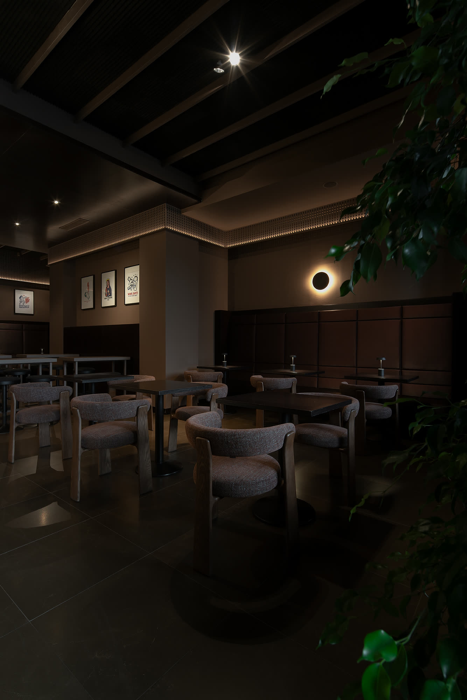
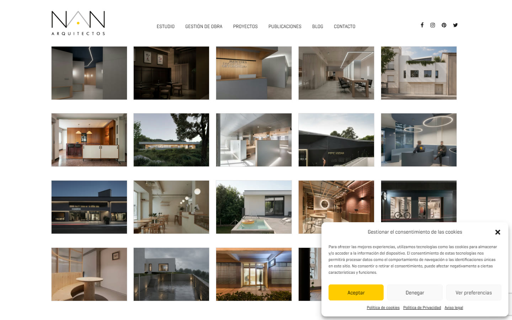
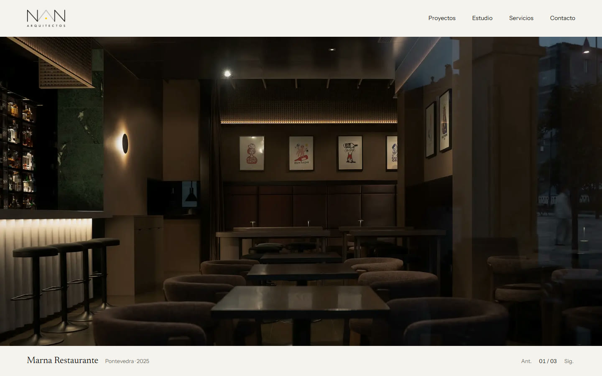
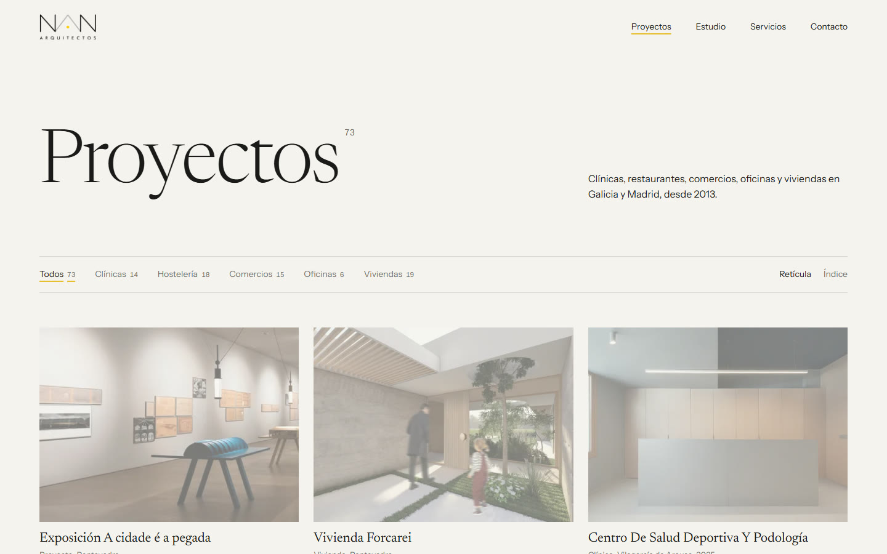
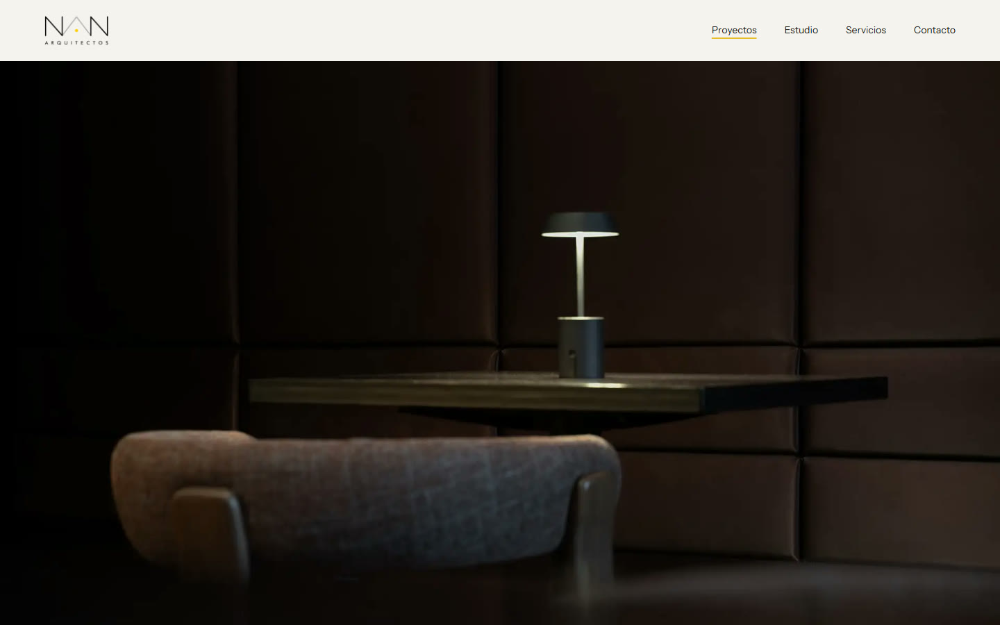
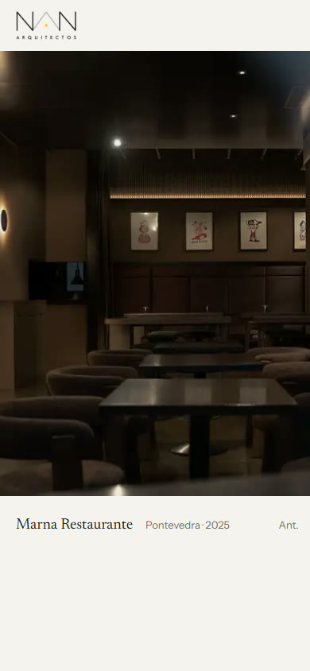

4.200 €
Diseño, migración de contenido y puesta en marcha, según el alcance de la página 08. IVA no incluido.
Propuesta de rediseño web


Qué proponemos
Fotos a pantalla completa, nítidas en pantallas retina y livianas en el móvil gracias a formatos modernos.
Proyectos, Estudio, Servicios y Contacto. Filtro por tipo de obra y un índice para quien busca rápido.
Sitio estático: sin base de datos ni plugins que actualizar, que es por donde suele entrar este tipo de spam.

01 · Inicio

02 · Proyectos


03 · Detalle
Medido con Google Lighthouse sobre el prototipo · móvil · 21/11/2026
Qué incluye
Cuatro semanas desde la aprobación
Repasamos el prototipo con el estudio y cerramos los cambios de diseño.
Fotos originales, textos que faltan y orden de los proyectos destacados.
Ajustes finales, formulario, redirecciones y pruebas en móvil y navegadores.
Cambio de dominio, alta en Google y una sesión para enseñar a mantenerla.
Inversión
Diseño, migración de contenido y puesta en marcha, según el alcance de la página 08. IVA no incluido.
Desglose
Opcionales
Condiciones
nan-arquitectos.vercel.app